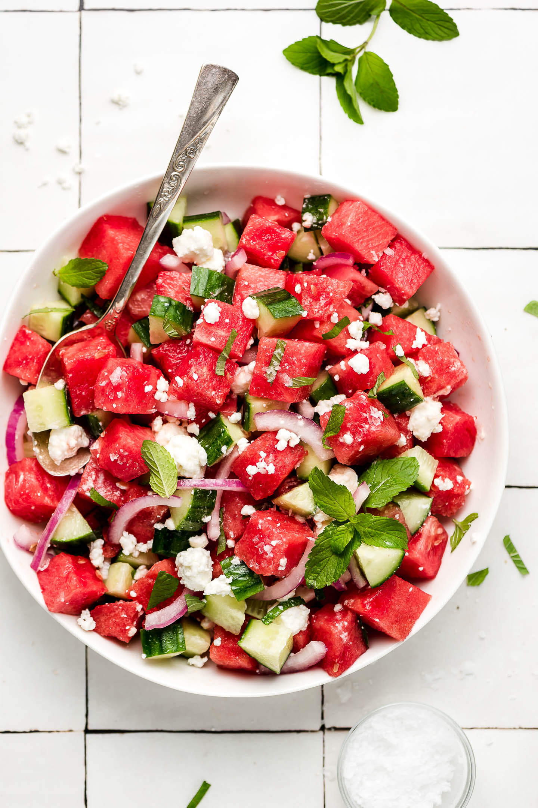

Watermelon Feta Salad

Description
This is a picture of the Watermelon Feta Salad. This recipe will be discussed in this section
Ingredients
- 3 tablespoons olive oil
- 2 teaspoons white balsamic vinegar
- 1/2 teaspoon kosher salt
- 8 ounces grape tomatoes, halved
- 3 cups arugula
- 1 cup sliced red onion
- 2 pounds watermelon, cubed
- 4 ounces feta cheese, cut into 1/4-inch cubes
Steps/Directions
- Whisk the olive oil, vinegar and salt together in a large mixing bowl
- Add tomatoes, arugula, and red onion; toss to coat it in the dressing
- Gently sir in the watermelon and feta cheese to serve.
Link to recipe